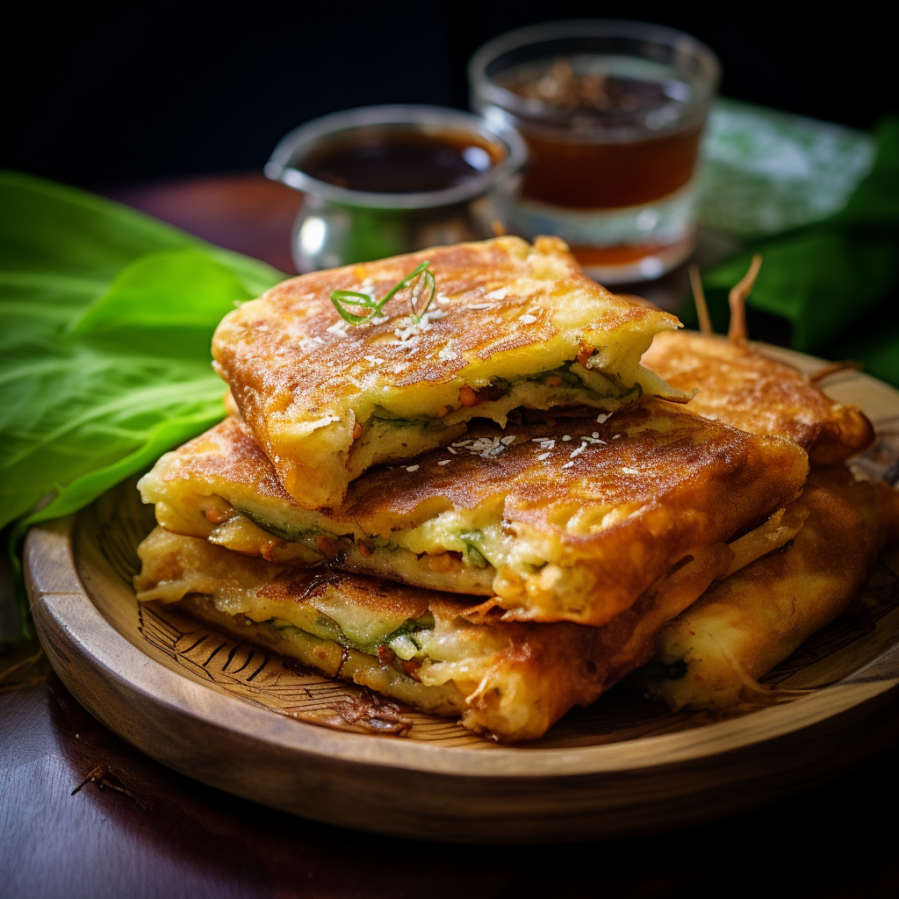

Martabak Magnificence
Delight in the savory indulgence of martabak, an Indonesian pancake that combines the fluffiness of dough with an array of delectable fillings. Whether savory, stuffed with minced meat, eggs, and vegetables, or sweet, oozing with gooey chocolate or cheese, martabak entices with its versatility and rich flavors. Served with a side of pickles and a tangy dipping sauce, this beloved street food dish has become a timeless favorite among locals and travelers alike.